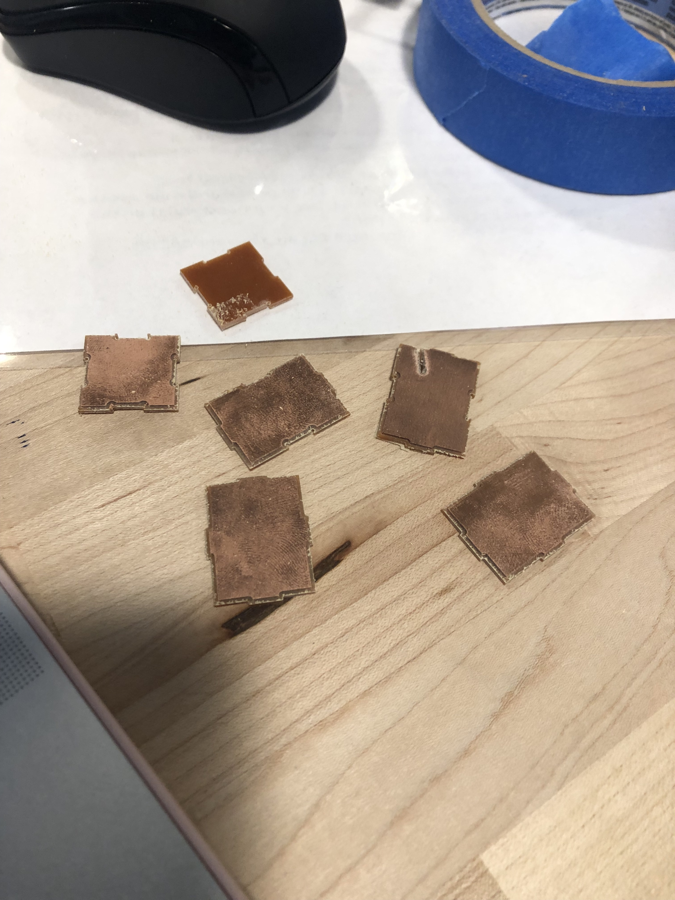
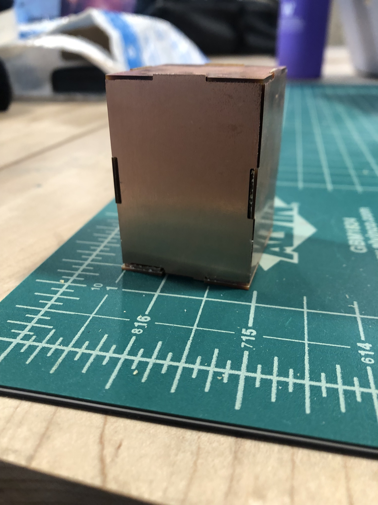

Assignment 6: Molding and Casting
My inspiration for this assignment:

Process
My coworker has a cellphone holder at her desk in the shape of a dinosaur. I decided to use that as an inspiration
to make my mold. I found an STL file of a dinosaur that was very similar to the one my coworker has on her desk and decided
to make the mold from it. I was going to try my hand at milling the machinable max, however, due to the size I was not able to mill it.
When I went to the Mill to get it cut, they said none of the qualified staff members were around. When I went to Nadya's OH
on Sunday, I was not one of the lucky few to get my piece milled with the ShopBot so I looked for alternate routes. I decided to
3D print the piece rather than try to mill it using the Bantam Mill in light of all of the problems I had in the milling assignment.
To create the mold's STL file, I downloaded the file into Rhino and built a box around it. The box is 2x2 inches and I scaled
the dino down to fit in the box with some room.


After the mold was 3D printed, I mixed the oomoo to create the silicone mold. Since I work, I left the mold in the Mill all day and night
and picked it up before class.
To conserve plaster for the rest of the class, Omari, Kira and I gt together to plaster together so we would use too much or too
little plaster.


Issues
Issue 1 The first issue was getting the dimensions correct in onshape, for some reason when I would put the pieces in the assembly they
didn't fit too well so it took a few tries to get a shape I was satisfied with.
Issue 2 & 3 When I loaded the file into kicad, the shape was stupidly small and I didn't know that this would affect the
milling. The shapes came out really small. I had to play around with the scaling on kicad to get the pieces to be converted correctly. Also, the tape wouldn't hold
and the piece kept flying off.


Final Design
The box fit a tiny bit loose but still held together so overall, I was pleased with it.

Source Files, Specs and Peer Attributions
OnShape Files for the box pieces here
OnShape Assemble for the box here
Peer credit goes to Hannah for helping me figure out the dimensions, troubleshooting the kicad issue and for helping me set up the mill. Also credit to Kira for
helping me trouble shoot when the mill wouldn't work.